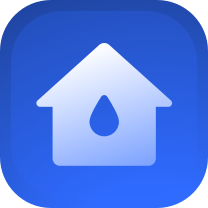
Home automation · Product · UI/UX
H2O Connect
A water monitoring system a household or industry can trust to run itself. One that shows what it is about to do, proves what it just did, and hands control straight back the moment something looks wrong.
Outcomes
- UX research
- Product ecosystem
- Design system
- Mobile app
- Working prototype
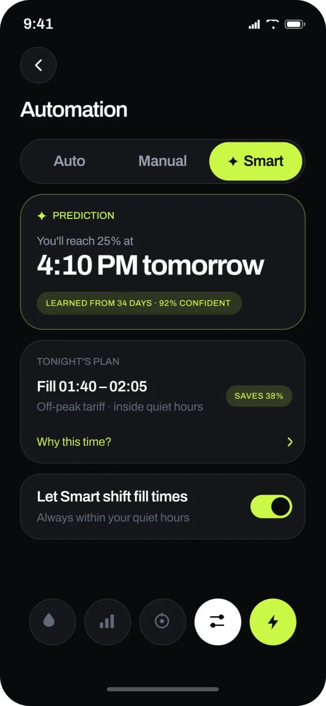
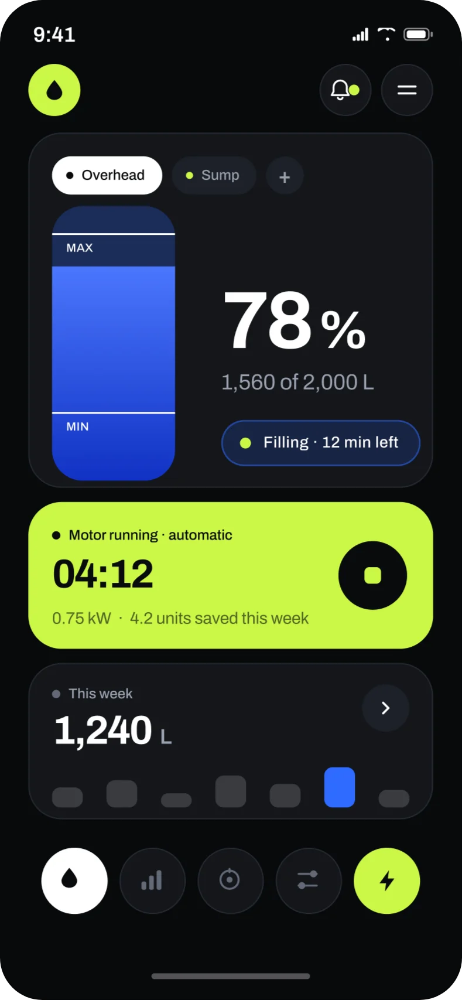
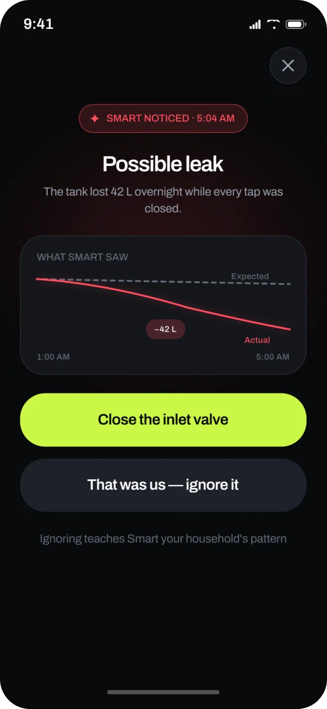
See it in motion
From the first tap on the home screen to the watch on the wrist and the display in the kitchen. One minute, the whole product.
Animated walkthrough. A tap on the H2o Connect icon opens the app on Home. The tour then shows the fill range, the motor screen, a low water alert, the three automation modes, the smart prediction, weekly usage and a possible leak alert that closes the inlet valve in one tap. It then shows the sonar sensor on the tank, the display unit by the motor switch and the app working together, a low water alert on Apple Watch and Galaxy Watch that starts the motor from the wrist, and the tank on Amazon Echo Show, Google Nest Hub and a concept HomePod with a screen.
Launch
One tap from the home screen
H2o Connect opens straight to the tank. No dashboard to decode and no menu to find.
Clicking here will take you directly to the design
Context
Piped water arrives for a few hours a day. Homes store it in a rooftop tank and pump it up by hand, with no gauge and no warning.
Every overflow is water the household already paid to pump.
source: MIT Tata Center
<6hrs
of piped supply a day in many Indian cities
source: World Bank
2hrs
what most town homes receive on a normal day
source: Jal Jeevan Mission, 2024
73.9%
of rural homes now have a tap. The problem has moved indoors.
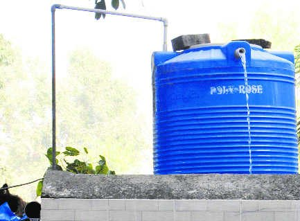
No gauge, so the first sign of full is water down the side.
Research
Pump routines are hard to recall, so the research watched them happen: the switchboard, the climb, the guess.
01 · home visits
8
households in Roorkee and Delhi NCR, one full fill cycle watched in each
02 · shadowing
4×
the pump keeper checked the tank in a single cycle
03 · trade interviews
5
plumbers and electricians on what fails: dry runs, burnt motors, corroded floats
04 · teardown
6
products on sale today, from float switches to app controllers
key finding
The checking comes from a lack of proof, not carelessness. The product has to supply the proof.
Participant numbers and quotes on this page are illustrative, written from the brief rather than taken from field notes.
People
One person carries the job; everyone else notices only when it fails. The app has to make sense to the whole household.
three rings
Primary
The pump keeper
Runs the motor and takes the blame.
Secondary
Everyone else at home
Find the problem at the tap, not the tank.
Tertiary
Trades, RWA, power company
Decide what can be installed and what power costs.
“I know the sound it makes when it’s nearly full. I don’t trust anything else.”
tests · trust
“If it can’t tell me why it did that, I’ll switch it off.”
tests · interoperability
“The switch is downstairs. That’s where I’ll be.”
tests · accessibility
Empathy and journey
Meera calls the routine simple, yet checks the tank four times a cycle. Two moments carry most of the pain: the wait and the climb.
“The tank’s nearly full, I can hear it.”
“Last time it ran dry, the motor burnt out.”
If I forget now, there’s no water at six.
Automatic things break when nobody’s watching.
Climbs to the terrace to look inside.
Switches off early on purpose.
Responsible by default.
Wary of anything that takes the switch away.
06:30
Supply arrives“Is it a supply day?”0 to 40 min
Notices it“Did someone switch it on?”+1 min
Walks to the switch“How long has it run?”+0 min
Motor on“Twenty minutes should do.”5 to 20 min · pain point
Waits and guesses“Is that our pump or the neighbour’s?”+15 min · pain point
Climbs to check“Better to look than flood the terrace.”+22 min
Switches off early“Full is a guess.”Next morning
Lives with it“Tomorrow I’ll start earlier.”
The reframe
Four observations led to one reframe, a need statement and four principles every screen is checked against.
reframe
Not a controller.
A witness that can act.
observation 01
Every home could run the pump. None could say what it had done.
State and evidence first, controls below.
observation 02
One runaway cycle sent a family back to the switch for good.
Every automatic action has a stop and a receipt.
observation 03
Nobody knew what a single fill costs.
Units and rupees, attached to each fill.
observation 04
A shared job, carried by one person.
The top card needs no setup knowledge.
need statement
A household that stores its own water needs to know what the tank and pump are about to do, and to stop them in one tap.
how might we
Help a household trust automation enough to stop checking, while staying in control?
01
State before controls
rules out: a home screen that opens on a power button
02
Every action leaves a receipt
rules out: silent schedules and automation with no history
03
Colour means something
rules out: colour used only to fill space
04
The wall switch always wins
rules out: any flow that traps a household inside the app
Plan
Six weeks, from the first home visit to a working prototype.
Phase 1Research
Phase 2Structure
Phase 3Design and prove
W1
W2
W3
W4
W5
W6
in scope
- Automatic, Manual and Smart
- 8 screens and 2 alerts
- Design system
- Hardware architecture
- Watch and smart home
- HTML prototype
left out on purpose
- First run pairing
- Multiple properties
- Billing
- Hindi UI
- Trained ML models
Hardware
A sonar sensor on the tank and a display unit beside the motor switch, built with Dwaj‑Tech. It works with the tank, pump and switch a home already has.
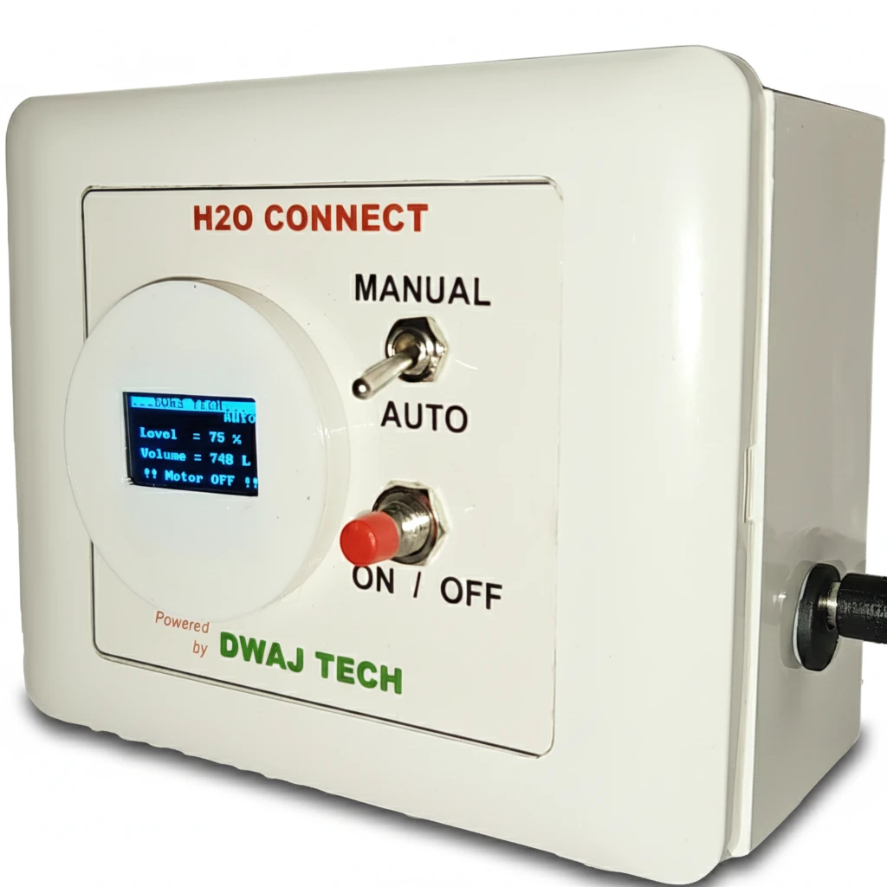
1 2 3 4working prototype · final design in progress
- DisplayLevel, volume and motor state, without a phone.
- Manual and Auto switchManual always wins, in hardware.
- ON and OFF buttonWorks with the phone or router down.
- WiringEnters beside the existing switch.
zero contact sensing
0corrosion
Sonar reads the air gap. Nothing touches the water.
automated motor control
20 to 40%
lower energy bills, estimated for large facilities.
safety · on the device
<200ms
Dry run, overflow and thermal cut offs. Needs no internet.
control · on the phone
<1s
Mode, levels, start and stop over the home network.
memory · in the cloud
30+days
History and the pattern Smart learns. Slows down, never fails.
Tank sensor
Sonar under the lid, magnetic mount.
In use
Display unit
Switches the motor, confirms it by current.
In use
Sump sensor
A dry run guard on the sump.
Planned
Inlet valve
Lets Smart close the inlet on a leak.
Planned
20min
to install
1step
needs an electrician
0
drilling or rewiring
joins the home over Matter
- Apple Home
- Alexa
- Google Home
- SmartThings
Structure
Five destinations, one level deep, and three flows that carry the product.
-
HomeTab 1Fill now
- Level, litres, time to full
- Motor status
- This week
- Active alert
-
MotorTab 2Fill now
- Start and stop
- Power, run time, cost
- Faults
- Bypass at the switch
-
ModesTab 3
- Automatic
- Manual
- Smart
- Back to Manual
-
HistoryTab 4
- Every fill
- Event log
- Leak records
- Export
-
SettingsTop bar
- Tanks and sensors
- Members
- Matter link
- Text size, language
Scroll sideways to see the whole map.
The daily fill, with nobody watching
- TriggerLevel drops below 25%
- 1Step 1Checks quiet hours and tariff
- 2Step 2Motor starts, confirmed by current
- 3Step 3Home shows level and time to full
- 4Step 4Stops at 90%
- OutcomeReceipt: 440 L · 22 min · ₹2.10
Something the system can’t explain
- Trigger42 L lost overnight, taps closed
- 1Step 1Compared with 34 days of history
- 2Step 2One notification at 5:04 AM
- EvidenceWhat Smart saw
- DecisionTwo equal choicesClose the inlet valveThat was us
- OutcomeLogged, and the pattern updates
Taking it back
- TriggerAny screen, any mode
- 1Step 1One tap on Stop, no dialog
- 2Step 2Relay responds in under 200 ms
- 3Step 3“Manual until you switch back”
- OutcomeAutomatic resumes only when asked
Directions
Greyscale wireframes fixed the hierarchy. Three visual directions were scored against the principles, and the final design merged the best of two.
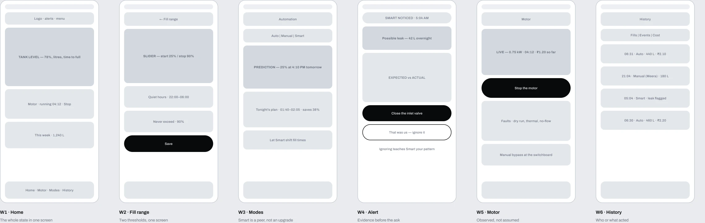
Scroll sideways to see the whole sheet.
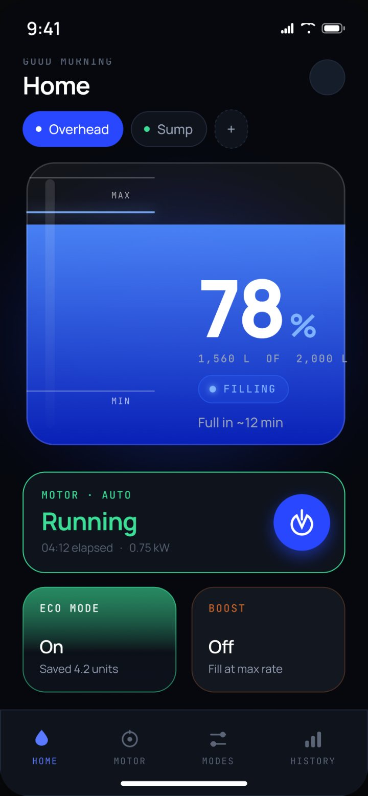
direction a
Ambient dark
Readable from across the room, but nothing could ever look urgent. Kept: the colour discipline.
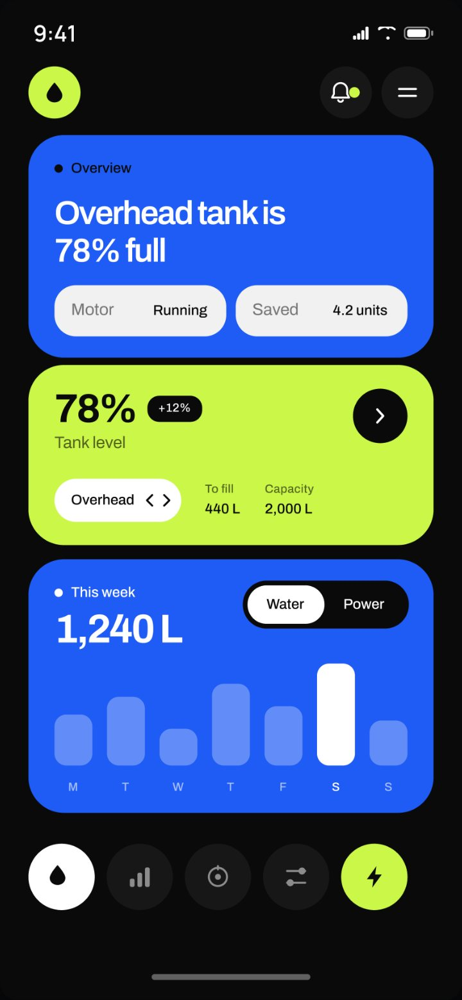
direction b
Bento
Clear hierarchy, but colour was spent on decoration. Kept: the card structure.
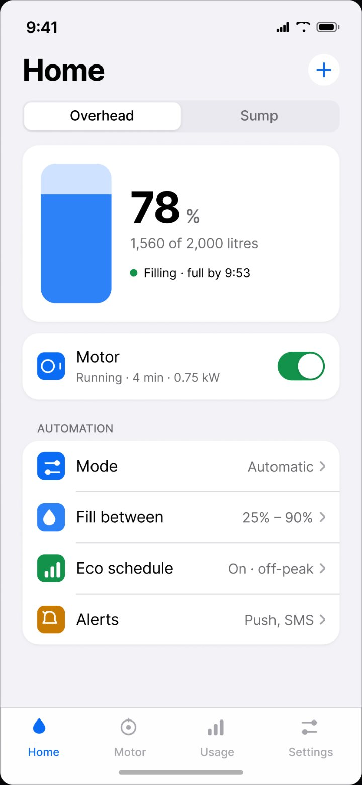
direction c
Platform native
Nothing to learn, and nothing to remember. Kept: the plain labels.
scored against the four principles
| Principle | A · Ambient dark | B · Bento | C · Platform native | Final |
|---|---|---|---|---|
| State before controls | Holds | Holds | Breaks | Holds |
| Every action leaves a receipt | Breaks | Breaks | Holds | Holds |
| Colour means something | Holds | Breaks | Not attempted | Holds |
| The wall switch always wins | Breaks | Breaks | Holds | Holds |
Design system
Five colour roles, one typeface and six component sets, with contrast measured against the app background.
Lime · action
- HEX
- #CBF848
- RGB
- 203, 248, 72
- Contrast
- 16.2 : 1 · AAA
Water
- HEX
- #2F6BFF
- RGB
- 47, 107, 255
- Contrast
- 4.4 : 1 · Large only
Text
- HEX
- #FFFFFF
- RGB
- 255, 255, 255
- Contrast
- 19.9 : 1 · AAA
Alert · low
- HEX
- #FFA53D
- RGB
- 255, 165, 61
- Contrast
- 10.2 : 1 · AAA
Alert · critical
- HEX
- #FF4D5E
- RGB
- 255, 77, 94
- Contrast
- 6.1 : 1 · AA
Text · muted
- HEX
- #99A1AE
- RGB
- 153, 161, 174
- Contrast
- 7.6 : 1 · AAA
Text · faint
- HEX
- #626A77
- RGB
- 98, 106, 119
- Contrast
- 3.6 : 1 · Restricted
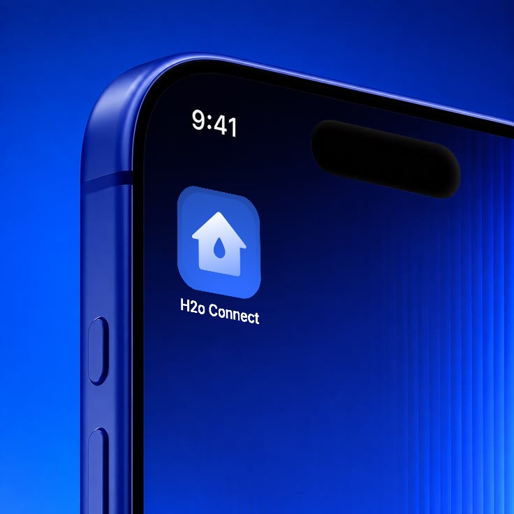
On the home screen
type · archivo
- F/Hero52 / 56 · Bold
- 78%
- F/Number34 / 38 · Bold
- 04:12
- F/Headline26 / 32 · SemiBold
- Possible leak
- F/Title18 / 24 · SemiBold
- Tonight’s plan
- F/Body14 / 20 · Regular
- 1,560 of 2,000 litres
- F/Label12 / 16 · Medium
- Filling · 12 min left
app icon · ios, watchos, wear os
system rules
- 48 px targets, 56 px for Stop
- 28 px card radius
- 800 ms level easing
- 160 ms state change
- No colour only states
- No confirm on Stop
components · six sets, twenty variants
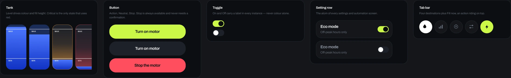
The product
Every screen answers “what’s happening?” before it offers an action.
Home
The tank is the largest element and the only thing in blue.
Fill range
Two levels, set once, in litres as well as percent.
Motor
“Running” is confirmed by current draw. Stop never asks twice.
Automation
Three equal modes, one tap apart.
Low water alert
Manual mode warns, but never acts.
Usage
Litres and electricity, tied to each run.
Smart mode
Every prediction shows its confidence.
Smart insight
Evidence first, then two equal choices.
smart mode · a rule engine over 30 days of household data
If Smart can’t explain why, it doesn’t act. It asks.
why not a chatbot
The question is “when will it be full?”, and the ideal number of steps to answer it is zero.
Beyond the phone
The same rules on the wrist, the speaker and the kitchen display. Every surface can stop the pump.
Apple Watch · glance
Level and time to full. Stop where the thumb lands.
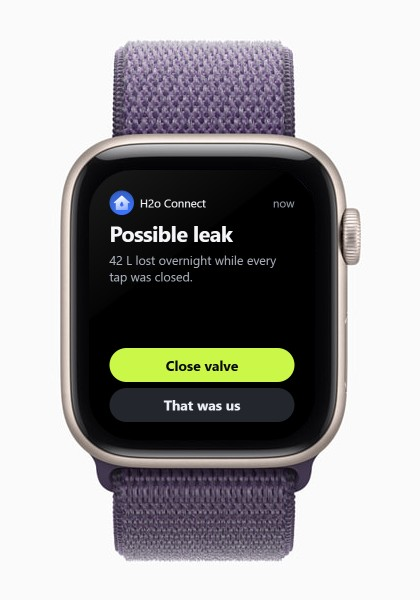
Apple Watch · alert
The evidence in one line, two equal choices.
Apple Watch · complication
The level stays on the watch face all day.
Galaxy Watch · status
An arc gauge suited to the round display.
Galaxy Watch · low water
The same words as the phone, one Start button.
Apple Watch · start
Low tank, motor off: Start is the only action.
HomePod with a screen · concept
“Hey Siri, stop the pump.”
Concept device render: 9to5Mac. Screen: H2o Connect.
Echo Show · Alexa
“Alexa, how full is the tank?”
Nest Hub · Google Home
Status on the counter, with an off peak routine.
Anyone at home can check the level and stop the pump from any surface. Safety settings only change in the app.
Validation
Accessibility targets, eleven designed edge states, four fixes from prototype walkthroughs, and the metrics a study would hold the product to.
accessibility
48px
minimum touch target
accessibility
56px
for Stop, never confirmed
accessibility
200%
text size without breaking
accessibility
0
states shown by colour alone
iteration 01 · what broke
Stop sat below the fold on small phones.
A persistent 56 px Stop beside the tab bar.
iteration 02 · what broke
“Automatic” didn’t say what it would do.
The card now spells out both levels.
iteration 03 · what broke
Everyone converted percent into buckets.
Litres at equal weight, time in minutes.
iteration 04 · what broke
The leak alert asked before it proved.
The evidence chart moved above the buttons.
edge states designed
11
What the app shows, and what the system does, when something goes wrong.
01
Sensor silent02
Battery low03
Power cut mid fill04
Running, not filling05
Two people act at once06
Smart still learning07
Tank drained on purpose08
Water in quiet hours09
No internet10
Motor overheats11
Phone replaced
- cuts power on the device
- warns and waits
- informs, nothing stops
heart · happiness
4 of 5
would leave it running unattended by week 4
heart · engagement
<3
app opens a week by week 6. Designed to fall.
heart · adoption
85%
reach a first automatic fill within 24 hours
heart · retention
70%
still automatic at day 60, after a fault
heart · task success
<3 s
median time to stop the motor
planned study
8
households
6
tasks
2
week diary
None of these metrics have been measured yet. They are set before the study, so the results can’t be picked after the fact. The 20 to 40% energy figure is an estimate.
A tank that tells you what it’s about to do.
H2o Connect · Domestic water management · A product by Dwaj‑Tech · 2026